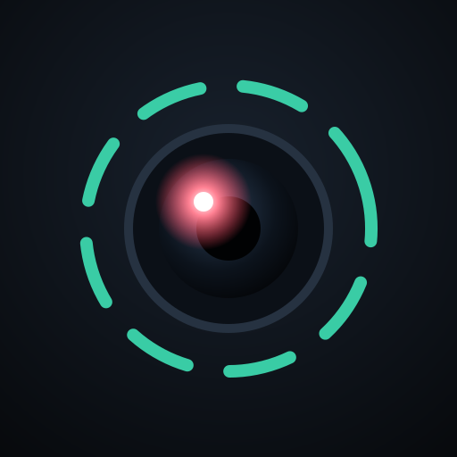

Camera Detector
Find hidden camera lenses — even with the lights on.
- Your flashlight blinks. About twice a second.
- Lenses blink back. A camera lens bounces light straight back at your phone. Room lights don't blink, so they cancel out.
- Sweep slowly. Red circles mark spots worth a closer look.
Runs entirely on your phone. No video leaves your device.
How it works
Camera lenses are retroreflectors: light going in bounces almost straight back to where it came from. Your flashlight sits right next to your camera, so a hidden lens lights up in your view far more than anything around it.
Flash scan blinks the flashlight and compares frames with it on and off. Lamps and daylight look the same in both, so they cancel out — that's why it works with the lights on. What's left are tiny spots that flash in sync with your light.
Settings
Tips
- Stand 1–3 m (3–10 ft) away and sweep slowly. Pause for a second on anything suspicious.
- Check what faces the bed, shower, toilet and desk: smoke detectors, clocks, USB chargers, power strips, air vents, picture frames, mirrors, TV boxes, speakers, plants and stuffed toys.
- Glow map view shows exactly what reacted to your flash. Red filter makes small glints easier to spot by eye.
- Walk up to anything flagged. A real lens looks like a tiny dark circle (often 1–3 mm) that glints when light hits it.
Night-vision check
Many hidden cameras use infrared lights to see in the dark. Your eyes can't see them, but a phone camera can. Turn the room lights off, switch to the front camera (it often filters infrared less), and look for small purple or white glowing dots.
Expect false alarms
Glass, shiny screws, jewellery, screens, reflective tape and pets' eyes can all bounce light back. Always confirm with your own eyes.
Limits
No app can promise to find every camera. A lens behind tinted glass, pointed away from you, or hidden inside an object without line of sight won't glint. You can also look at the Wi-Fi network list for devices you don't recognise.
Flash scan needs a browser that lets websites control the flashlight (Chrome on Android does). Other browsers use Spot scan, which looks for tiny bright points — hold another light right beside the camera for best results.